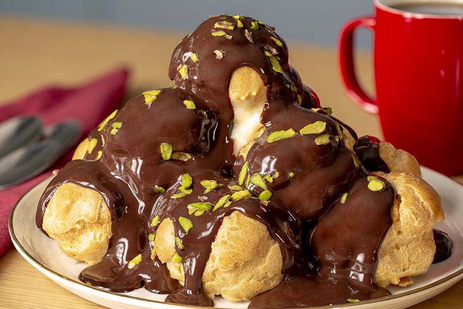

Kaç Kişilik: 4 Kişilik
Hazırlama Süresi: 40 dakika
Pişirme Süresi: 35 dakika
Profiterol Tarifi için Malzemeler
Profiterol hamuru için:
- 1 su bardağı su
- 1 su bardağı un
- 1/2 paket margarin (125 gram)
- 3 adet büyük boy yumurta
Kreması için:
- 500 ml. süt
- 1,5 çay bardağı toz şeker
- 3 yemek kaşığı un
- 1 paket vanilin (veya vanilya çubuğu)
Çikolata sosu için:
- 220 gram bitter çikolata
- 200 gram krema
Profiterol Nasıl Yapılır?
- Kremasını hazırlamak için, bir sos tenceresine 2,5 su bardağı süt, 1,5 çay bardağı toz şeker ekleyin.
- 3 yemek kaşığı un ve 1 adet yumurta ekleyip orta ateşte koyu bir kıvam alana kadar sürekli olarak karıştırın.
- Koyulaşana kremaya 1 paket vanilin ekleyip tekrar karıştırın ve ocaktan alıp, oda sıcaklığına geldikten sonra sıkma poşetine doldurup, en az 1 saat buzdolabında bekletin.
- Profiterol hamurunu hazırlamak için, 1 su bardağı suyu ve 125 gram margarini bir tencerede kaynatın.
- Ardından 1 su bardağı unu da ekleyerek 3-4 dakika sürekli olarak karıştırın. Toparlanan hamuru ozaktan alın ve oda sıcaklığında 15 dakika dinlenmeye bırakın.
- 3 adet büyük boy yumurtayı birer birer ekleyerek dinlenmiş olan hamura yedirin.
- Hamur, yumurtalarla tamamen karıştıktan sonra 15 dakika daha dinlendirin.
- 1'er tatlı kaşığı hamuru pişirme kağıdı serili fırın tepsisine arada boşluk kalacak şekilde kaşık yardımıyla dökün.
- Önceden ısıtılmış 180 derece fırında 40 dakika pişirin.
- Pişen profiterol hamurlarını oda sıcaklığında dinlendirin.
- Sonrasında alt kısımlarından bıçak yardımıyla delik açın.
- İçini hazırladığınız kremayla doldurun.
- Çikolata sosu için; küçük parçalara ayırdığınız bitter çikolatayı, küçük bir sos tenceresinde krema ile tamamen eriyene kadar karıştırın ve ocaktan alıp ılımaya bırakın.
- Üst üste dizdiğiniz profiterollerin üzerine hazırladığınız çikolata sosu ve file Antep fıstığı gezdirip servis edin.